Día 8: isometría y control + cuello y postura (sin equipo)
Hoy trabajamos isometría y control, cuello y postura, core (abdomen y zona media) con ejercicios simples que caben en una habitación. El objetivo es construir fuerza útil, resistencia y control corporal con el mínimo de equipo.
Prioriza la técnica, respira con control y acumula consistencia: incluso una sesión corta suma cuando la repites día tras día.
1. Extensión isométrica con apoyo en las manos y apertura de la boca
Antes de empezar: haz el calentamiento y repasa la respiración. (No lo saltes.)
Protocolo isométrico. Tensión de 12 segundos. Descansa hasta recuperar la respiración. Repite 10 veces. Por lado, si aplica. Más detalles en Respiración.
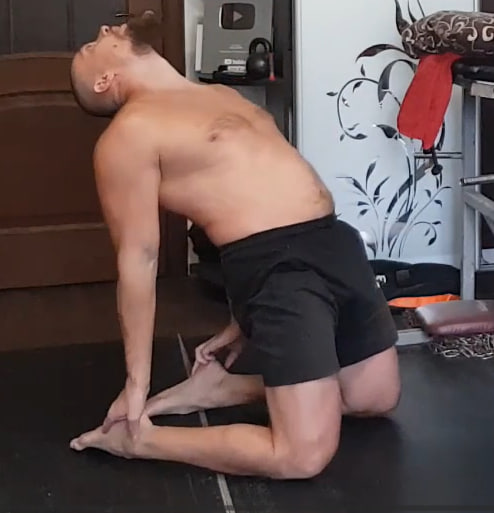
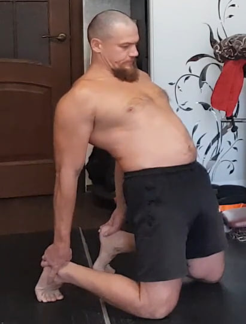
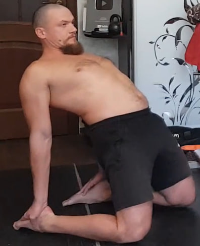
Ponte de rodillas y siéntate sobre los talones. Agarra los talones con las manos. Lleva el pecho hacia arriba y la cabeza hacia atrás (sin tirones). En esa posición: abre la boca al máximo y ciérrala lentamente (como con resistencia). Haz 10 veces abrir/cerrar. Vuelve despacio hacia adelante y pega la barbilla al pecho. Mantén 10 conteos (~10 s). Eso es 1 repetición. Haz 10 repeticiones.
2. Isometría de cuello con almohada bajo el mentón
Protocolo isométrico. Tensión de 12 segundos. Descansa hasta recuperar la respiración. Repite 10 veces. Por lado, si aplica. Más detalles en Respiración.
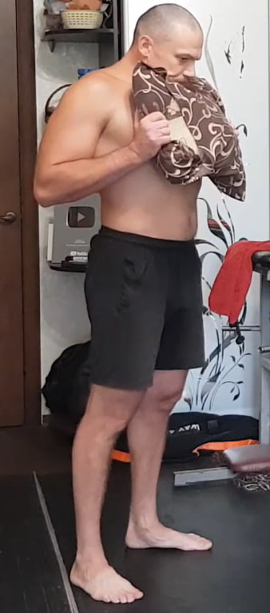
Coloca una almohada o una toalla enrollada entre el mentón y la parte alta del pecho. La boca permanece cerrada, pero sin apretar los dientes. Sujeta la almohada con ambas manos y tira de ella hacia abajo con fuerza, mientras el mentón se opone y no permite que el objeto se deslice. La tensión debe sentirse en la parte frontal del cuello y en los músculos cervicales profundos, no en la mandíbula.
3. Isometría frontal del cuello con bloqueo de las manos
Protocolo isométrico. Tensión de 12 segundos. Descansa hasta recuperar la respiración. Repite 10 veces. Por lado, si aplica. Más detalles en Respiración.

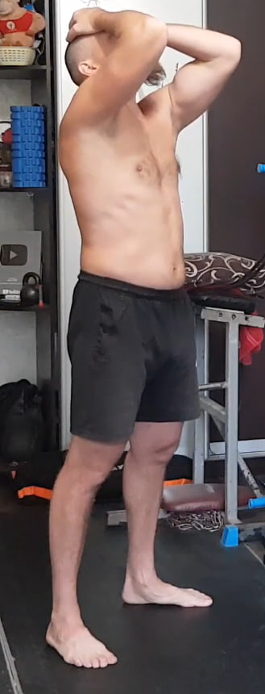
Entrelaza las manos y colócalas sobre la parte superior de la frente. Echa ligeramente la cabeza hacia atrás: sin las manos podrías inclinar la cabeza hacia adelante, pero ahora las palmas crean un bloqueo total. Empuja la frente contra las manos, intentando llevar la cabeza hacia adelante sin permitir movimiento alguno.
4. Isometría diagonal del cuello con apoyo de una mano
Protocolo isométrico. Tensión de 12 segundos. Descansa hasta recuperar la respiración. Repite 10 veces. Por lado, si aplica. Más detalles en Respiración.

Inclina ligeramente la cabeza hacia adelante y gírala hacia el lado de la mano que ofrece la resistencia. Coloca la palma sobre la parte frontal-lateral de la cabeza. Intenta inclinar y girar la cabeza aún más hacia esa mano, mientras la palma bloquea completamente el movimiento. Respira de forma tranquila.
5. Isometría de rotación del cuello con apoyo en el pómulo
Protocolo isométrico. Tensión de 12 segundos. Descansa hasta recuperar la respiración. Repite 10 veces. Por lado, si aplica. Más detalles en Respiración.
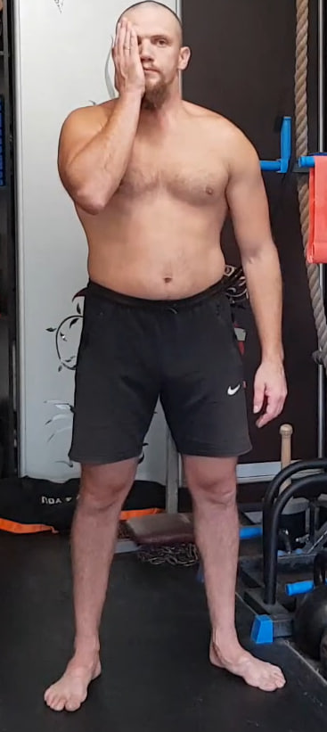
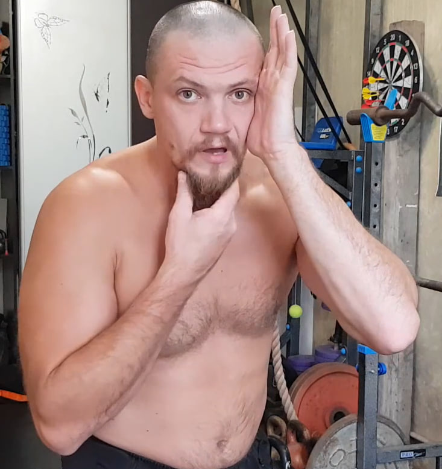
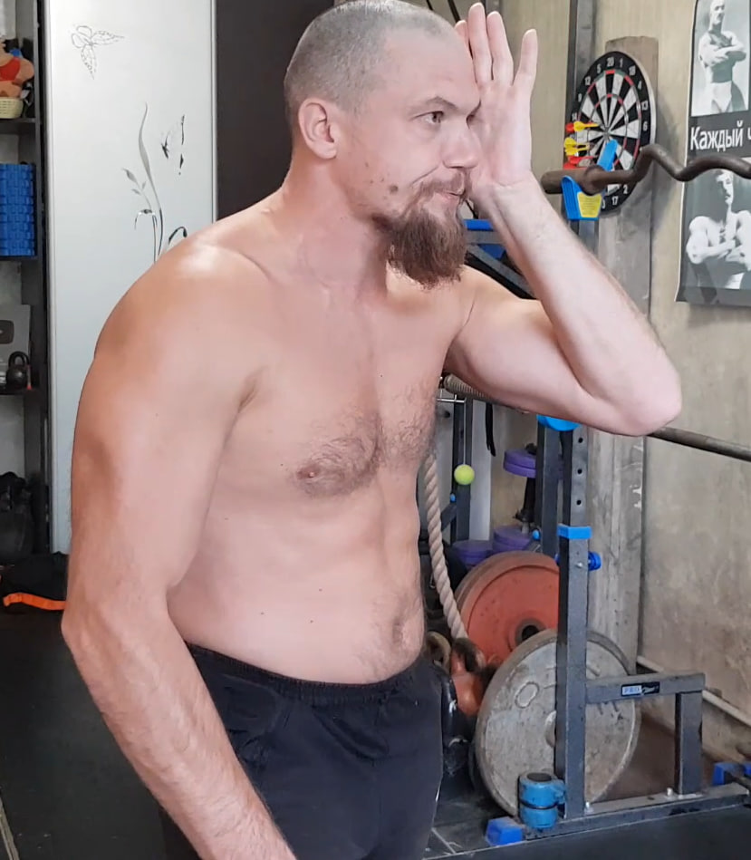
Coloca la palma directamente sobre el pómulo, no sobre la mandíbula, para que la fuerza se transmita al cráneo y no a los dientes. Gira ligeramente la cabeza hacia la mano y, desde ahí, intenta rotarla aún más hacia ese lado mientras la palma bloquea por completo el movimiento. La cabeza no debe moverse: toda la tensión es interna.
6. Isometría de inclinación lateral del cuello con resistencia en sentido contrario
Protocolo isométrico. Tensión de 12 segundos. Descansa hasta recuperar la respiración. Repite 10 veces. Por lado, si aplica. Más detalles en Respiración.
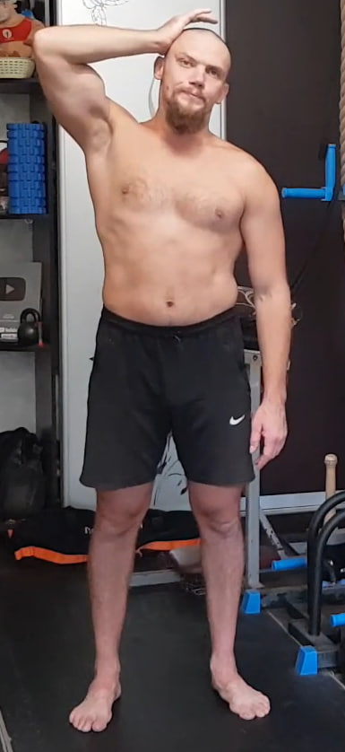
Coloca la palma en la parte lateral-superior de la cabeza. La mano “quiere” llevar la cabeza hacia su propio hombro, y tú haces lo contrario: intentas alejar la cabeza, como si quisieras llevar la oreja hacia el hombro opuesto. No debe haber movimiento visible: la mano y la cabeza se anulan y toda la tensión queda dentro de los músculos. Mantén los hombros relajados y siente cómo trabaja sobre todo el lado del cuello opuesto a la mano.
7. “Aplastar el coco” entre las escápulas
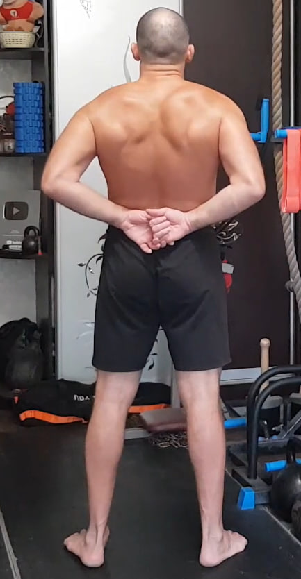
Ponte de pie con la espalda recta y los pies al ancho de las caderas. Entrelaza las manos detrás de la espalda, justo por encima de la cintura, y lleva los codos hacia atrás y ligeramente hacia afuera. Imagina que tienes un coco entre las escápulas y que debes no solo sujetarlo, sino romperlo usando la fuerza de la parte media y alta de la espalda. La clave es cerrar las escápulas hacia adentro sin arquear la zona lumbar ni levantar los hombros. Mantén la contracción durante 10 segundos, relaja y repite 10 veces.
8. Isometría del dorsal ancho (parte externa)
Protocolo isométrico. Tensión de 12 segundos. Descansa hasta recuperar la respiración. Repite 10 veces. Por lado, si aplica. Más detalles en Respiración.

Coloca un brazo totalmente recto detrás de la espalda. Con la otra mano sujeta firmemente la muñeca o el antebrazo del brazo de trabajo, creando un punto de agarre sólido. Desde esta posición intenta llevar el brazo recto hacia tu cuerpo, mientras la parte externa del dorsal ancho se opone y no permite que el brazo se acerque. Ajusta ligeramente la altura de los brazos hasta sentir la contracción clara en el lateral de la espalda.
9. Estiramiento final de la espalda
Protocolo isométrico. Tensión de 12 segundos. Descansa hasta recuperar la respiración. Repite 10 veces. Por lado, si aplica. Más detalles en Respiración.
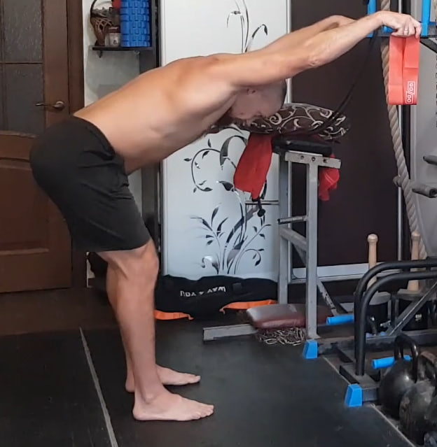
Al terminar la serie isométrica realiza un único estiramiento para liberar la tensión acumulada en la espalda. Inclínate hacia adelante apoyando las manos en una superficie estable y estira los brazos por completo. Lleva la cadera hacia atrás para alargar la columna y permite que la musculatura se relaje de forma natural. Mantén la posición unos segundos respirando con calma. Este estiramiento se realiza solo una vez como cierre del bloque.
10. Isometría del dorsal ancho (zona externa inferior)
Protocolo isométrico. Tensión de 12 segundos. Descansa hasta recuperar la respiración. Repite 10 veces. Por lado, si aplica. Más detalles en Respiración.

Coloca las manos entrelazadas detrás de la espalda un poco más abajo que la línea de la cintura. Mantén los brazos rectos o casi rectos y lleva ligeramente los codos hacia atrás. Desde esta posición intenta tirar de los brazos hacia adentro y hacia arriba mientras la zona externa e inferior del dorsal ancho se opone y evita cualquier movimiento. La contracción debe sentirse en el lateral bajo de la espalda, justo debajo de las costillas.
11. Elevaciones de espalda con pausa isométrica
Protocolo isométrico. Tensión de 12 segundos. Descansa hasta recuperar la respiración. Repite 10 veces. Por lado, si aplica. Más detalles en Respiración.
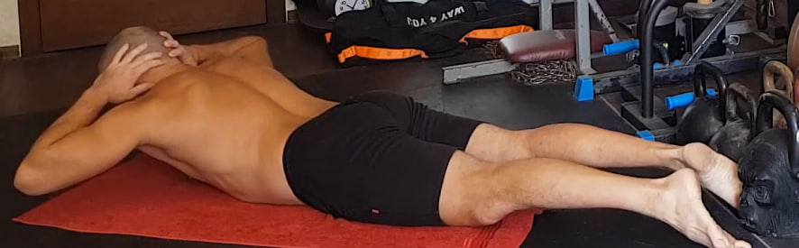
Acuéstate boca abajo con las piernas estiradas y las manos entrelazadas detrás de la cabeza. Desde esta posición eleva el pecho, los codos y la parte superior del torso lo más que puedas, manteniendo las piernas rectas y activas. Luego baja con control y repite. Realiza 10 repeticiones, cada una con su pausa de 10 segundos arriba.
12. Inclinaciones hacia el suelo con piernas rectas
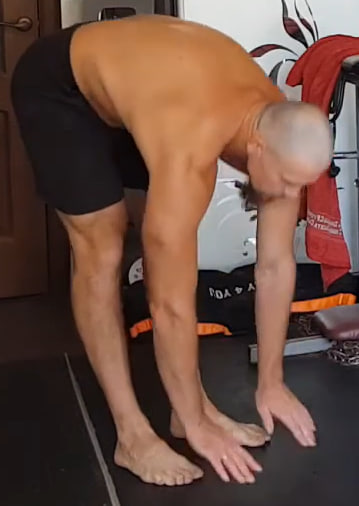
Colócate de pie con las piernas completamente rectas y los pies al ancho de las caderas. Inclina el torso hacia adelante llevando la cadera hacia atrás e intentando tocar el suelo con las manos sin doblar las rodillas. Después vuelve a ponerte de pie estirando todo el cuerpo. Realiza el ciclo completo —inclinación y extensión— 10 veces con un ritmo tranquilo.
13. Isometría de elevación de rodilla para glúteo y bíceps femoral
Protocolo isométrico. Tensión de 12 segundos. Descansa hasta recuperar la respiración. Repite 10 veces. Por lado, si aplica. Más detalles en Respiración.

Levanta una pierna lo más alto posible, llevando la rodilla hacia el pecho. Sujeta la pierna con ambas manos, creando un punto de bloqueo firme. Desde esa posición intenta elevar la pierna aún más mientras las manos lo impiden por completo. La tensión debe sentirse en el glúteo y en la parte posterior del muslo.
14. Elevación isométrica de pierna recta a 90 grados
Protocolo isométrico. Tensión de 12 segundos. Descansa hasta recuperar la respiración. Repite 10 veces. Por lado, si aplica. Más detalles en Respiración.

Levanta una pierna completamente recta hacia adelante e intenta llevarla hasta 90 grados con respecto al torso, o hasta donde tu movilidad lo permita. La pierna de apoyo puede estar ligeramente flexionada, pero la espalda debe mantenerse lo más recta posible. Regresa con control y repite. Realiza 10 repeticiones por cada lado.
15. Saltos en posición de plancha


Comienza en posición de plancha con los brazos extendidos y el abdomen firme. Desde ahí salta llevando los pies hacia adelante debajo del pecho y luego salta de nuevo para volver a la plancha. Mantén la cadera estable y evita que la zona lumbar se hunda. Realiza 10 saltos seguidos con un ritmo elástico y continuo.
16. Extensiones isométricas de pierna hacia atrás para glúteo
Protocolo isométrico. Tensión de 12 segundos. Descansa hasta recuperar la respiración. Repite 10 veces. Por lado, si aplica. Más detalles en Respiración.
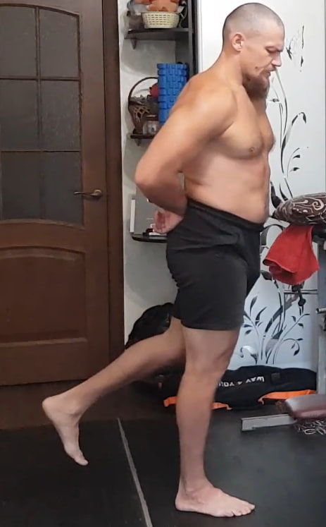
Ponte de pie con la espalda completamente recta, evitando inclinarte hacia adelante. Desde esta postura lleva una pierna recta hacia atrás, creando tensión en el glúteo. Aprieta el glúteo con la máxima fuerza posible durante 10 segundos y luego cambia de pierna. Realiza 10 repeticiones por cada lado.
17. Burpees sin flexiones


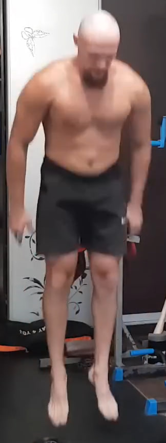
Colócate en posición de plancha con las manos bajo los hombros y el cuerpo en línea recta. Desde ahí salta llevando los pies hacia adelante cerca de las manos y, sin detenerte, realiza un pequeño salto vertical con el cuerpo erguido. Aterriza suave, vuelve a colocar las manos en el suelo y salta hacia atrás a la plancha. Este ciclo cuenta como una repetición. Completa 10 repeticiones.